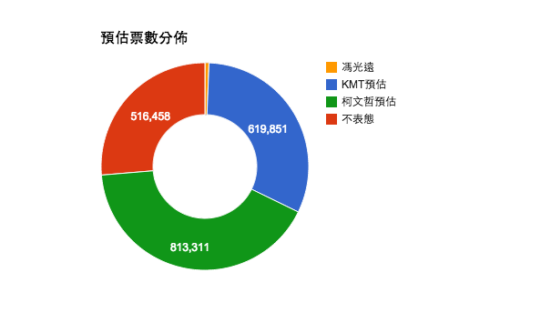

緣起
每次選舉我們都會很好奇，到底民調與最後選舉結果是不是有相關性．但很少看見有人真的去根據民調與其他的資料搭配之後，將預估得票數計算做成報告．因此希望透過這次的台北市長選舉相關資料，能夠讓這個問題得到初步的解決
探討問題
本研究主要是針對以下幾個變數做調整
- 台北市 2014 年可投票人數
- 各年齡層真的會去投票比率
- 最後一次的民調 － 2014/11/15
資料來源
| 項目 | 說明 |
| 2014 主計處各縣市人口統計 | 每年都會有一份統計數據放在主計處網站，這次為了快，手動自己解出來 |
| 2008 TVBS 總統大選後兩天民調 | 用當時強調改變的氣氛來詮釋這是台北市各年齡層的投票比例 |
| 2014/11/15 趨勢.民意調查 | 法律規定最後一次的民意調查，根據過去經驗，越接近越準 |
注意事項
此分析並沒有考慮到候選人自身因素或者當時時空背景，僅由原始資料做簡單整理呈現結果，根據經驗來說，雖然並非完全準確的反映現況，但通常在大數據威能下，真正答案大多存在於平均數附近
沈默的多數
透過2014台北市人口組成20-29 30-39 40-49 50-59 60-69 70+，以及根據2008 TVBS的投票率計算得知

- 預估台北市會去投得票數有192萬
- 40-49歲是最多人的
- 20-29歲 與 30-39歲 這兩大板塊人數都是倒數多(還記得少子化嗎)
選票版圖
根據會去投票票數再乘上民調分配
- 表態之中，柯文哲59歲以下都贏，在20-39歲區塊是壓倒性勝利(就算其他人家尚未表態都不可能贏)
- KMT以 60-69歲為主力，特別是票數跟著年齡是正相關
- 不表態的人數也是跟年齡正相關(抖)
預估投票結果
直接加總上述各陣營數據
- 已表態部分，柯文哲贏19萬張票
- 已表態部分，馮光遠拿不回保證金
- 考慮全部不表態趨勢與KMT趨勢相似，最極端狀況就是都是ＫＭＴ的票，那麼KMT贏 32萬張票
結論
看好度, 你信嗎?(柯文哲最差都能贏KMT5萬票)

以下統整之前幾張圖表告訴我們幾件重要的事情
- 已表態部分，馮光遠拿不回保證金
- 柯文哲沒想像中的穩定，輸的機率不低．如果根據看好度來說，其實最差柯文哲都能贏5萬票，但這太不準了
- KMT的實力絕對深不可測
這個工作還沒有完成，還有很多事情需要補完，像是互動式圖表達到真正的模擬器．但受限時間問題，後續有空再補上或者來信，我們可以一起來完成它!